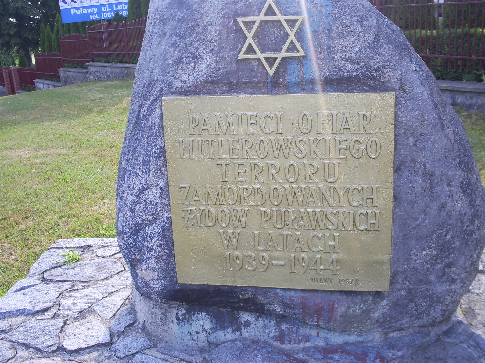
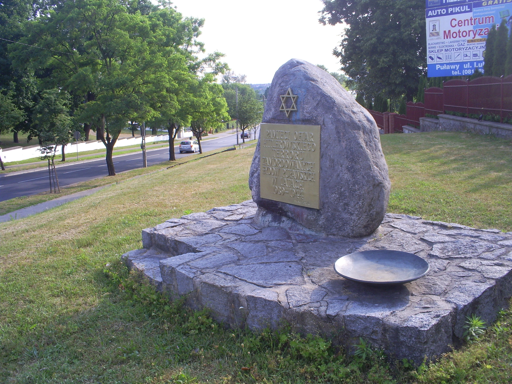
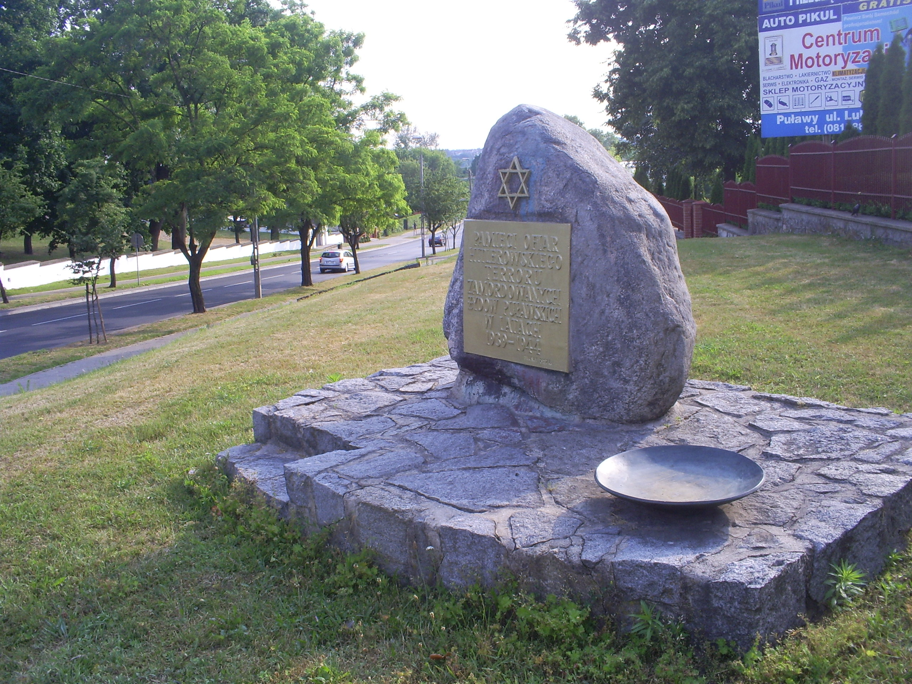

Pomnik pamięci pomordowanych Żydów puławskich został postawiony w 1987 r. przez ówczesne władze Miasta Puławy. Na uwagę zasługuje fakt, że wcześniej nikt nie wpadł lub nie chciał wpaść na pomysł upamiętnienia 3.600 Żydów zamordowanych przez niemieckich ludobójców (nazistów). Pomnik został postawiony w miejscu, w którym kiedys stała synagoga.
Po jakimś czasie pomnik uległ dewastacji wskutek wybryku wandali. Został kilkakrotnie zalany farbą olejną dosyć obficie i już nigdy potem nie odzyskał śladów swojej świetności.
Straszył swoim wyglądem przechodniów i jakoś nikt nie mógł się zebrać, aby coś z tym zrobić.
22 maja 2010 roku przyjechało do mnie 3 Żydów, którzy chcieli zwiedzić miejsca pamięci Żydów w Puławach. Ja wcześniej nie interesowałem się tą historią bo i nic po nich nie pozostało. Jednak musiałem się jakoś przygotować i zebrać pewne informacje i tak się zaczęło. Tuż po wizycie obywateli Państwa Izrael zostałem pobudzony do tego, aby zrobić coś z tym pomnikiem. Kilka dni po tym poszedłem do Urzędu Miasta Puławy z propozycją, że nasza parafia Metodystów podejmie się uporządkowania tego pomnika tak, aby nie straszył więcej swoim wyglądem. Podpisaliśmy umowę i wykonaliśmy swoje zobowiązania. Biuro Zieleni Miejskiej ma wykonać kwietnik wokoło. Myślę, że teraz przechodnie (a wierzę, że też osoby czytające ten artykuł) zainteresują się tym pomnikiem i związaną z nim historią Żydów naszego miasta. Plan renowacji tego pomnika przyczynił się do napisania książki o Żydach puławskich i moje zainteresowania Judaizmem wzrosły.
Jarosław Bator
POMNIK PRZED RENOWACJĄ
(22.05.2010)
 [1]
[1]
POMNIK W TRAKCIE RENOWACJI
(KWIECIEŃ 2011)
[2]
[3] .JPG) [4]
[4]
POMNIK PO RENOWACJI
(ODMALOWANA TABLICA - 14 CZERWCA 2011)
 [5]
 [6]  [7]
[6]  [7]
PROJEKT ZAGOSPODAROWANIA TERENU PRZY PAMIĄTKOWYM KAMIENIU
LIST TOWARZYSTWA PRZYJAŹNI IZRAEL-POLSKA DO PREZYDENTA MIASTA PUŁAWY
UROCZYSTE ODSŁONIĘCIE POMNIKA
 [10]
[10]
Powtórne Uroczyste odsłonięcie pomnika upamiętniającego wymordowanie
żydów puławskich przez hitlerowców. Odsłonięcie Odbyło się 04.09.2011r.